地政学
ジュバは南スーダンの独立後に国家運営を集めた首都で、白ナイル、空港、ウガンダ方面の道路が外交と物資を運びます。和平、治安、援助、国境貿易が街の価格と移動を左右する都市です。国家の緊張も街路に現れます。
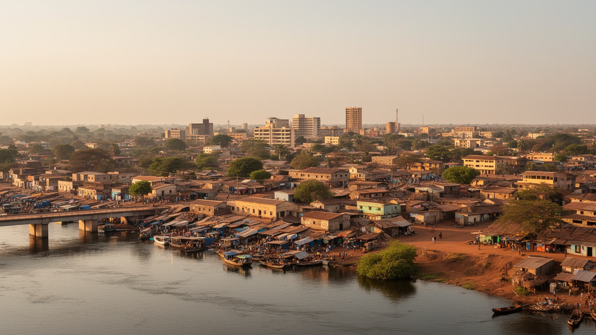
🇸🇸 南スーダン / 東アフリカ / World City Atlas
白ナイル河畔の首都です。独立国家の中枢、援助機関、国境物流、市場、教会とモスク、避難民の住まい、土地問題、若い国家の再建が同じ街路に重なります。
都市の骨格
ジュバは白ナイルの河港、国際空港、官庁、大学、市場、援助機関の拠点が近接する首都です。道路はウガンダ方面の輸入路へ続き、国家の再建と毎日の家計が同じ物流に依存しています。
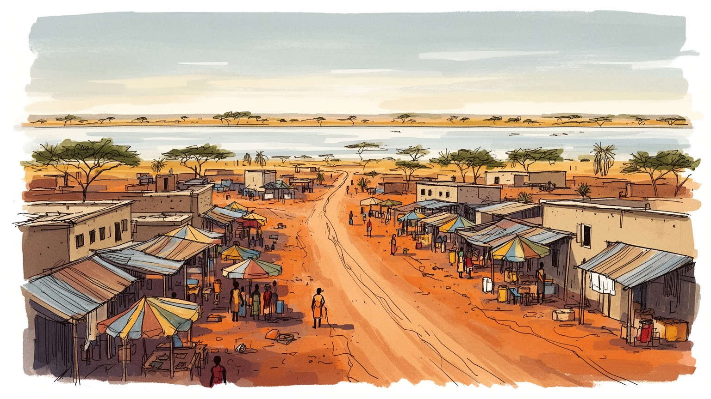
ジュバは南スーダンの独立後に国家運営を集めた首都で、白ナイル、空港、ウガンダ方面の道路が外交と物資を運びます。和平、治安、援助、国境貿易が街の価格と移動を左右する都市です。国家の緊張も街路に現れます。
雇用は政府、援助機関、物流、建設、市場、飲食、警備、清掃、運転に広がります。輸入品の価格、燃料、検問、通貨不安は商売を揺らし、露店や日雇い、家族商店が都市の生活を支えます。若者の職探しも大きな課題です。
ジュバはバリなど周辺コミュニティに加え、各州から来た人びとが暮らす多民族の首都です。教会、モスク、伝統的な儀礼、言語、音楽、結婚式が混ざり、信仰は避難と再建の記憶を支える力にもなります。祈りは日常です。
ナイル河岸や記念広場、市場は都市を知る入口ですが、住民には家賃、水、電気、治安、学校、医療、暑さ、雨季の道路が日々の条件です。訪問には安全確認が必要で、暮らしへの敬意が欠かせません。慎重に歩く街です。
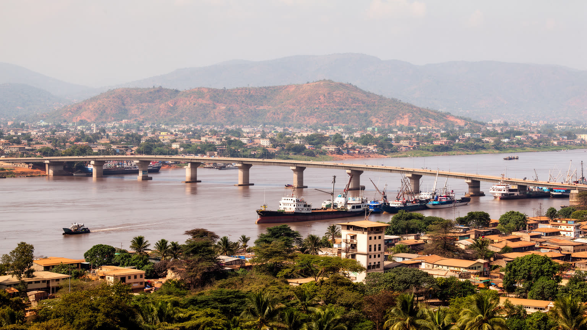
ジュバは白ナイルの西岸に沿って広がり、河川、橋、空港、幹線道路、低い丘陵が都市の形を決めています。水辺は眺めの場所であるだけでなく、貨物、燃料、魚、砂、建材、人の移動を受け止める実用の縁です。南へ向かう道路はウガンダ国境のニムレ方面へ続き、輸入品と援助物資の多くがこの回廊を通るのです。北や東へ伸びる道は治安、雨季、橋、検問の影響を受けやすく、道路の状態が市場価格や病院への到達を変えます。首都の地図を読む時、官庁街やホテルだけを見ると、都市の本当の骨格を見落とすのです。白ナイル、国際空港、河港、バス乗り場、倉庫、市場、周辺集落が互いに支え合い、国家の中枢を動かしています。川は南スーダンの広い湿地と季節の水を思い出させ、乾いた季節には都市に涼しさと砂埃の両方を運びます。水辺に近いことは豊かさであると同時に、洪水、排水、土地利用、公共空間の管理という課題でもあります。ジュバの首都性は、川に沿って集まった道路と制度が、まだ整いきらないまま毎日の生活を支えている点にあります。都市の成長は河岸を押し広げ、土地の値段や移転の問題も生みます。船着き場の周辺には小商い、修理、食堂、待合の人びとが集まり、川は交通の線であると同時に生活の広場にもなります。乾季の低い水位や雨季のぬかるみも、輸送の速度と街の気分を変えます。川を背にした都市ではなく、川とともに不安定に動く首都として読む必要があります。白ナイルを軸に見ると、首都の政治、物流、住まいの距離感が一枚の地図としてつながります。
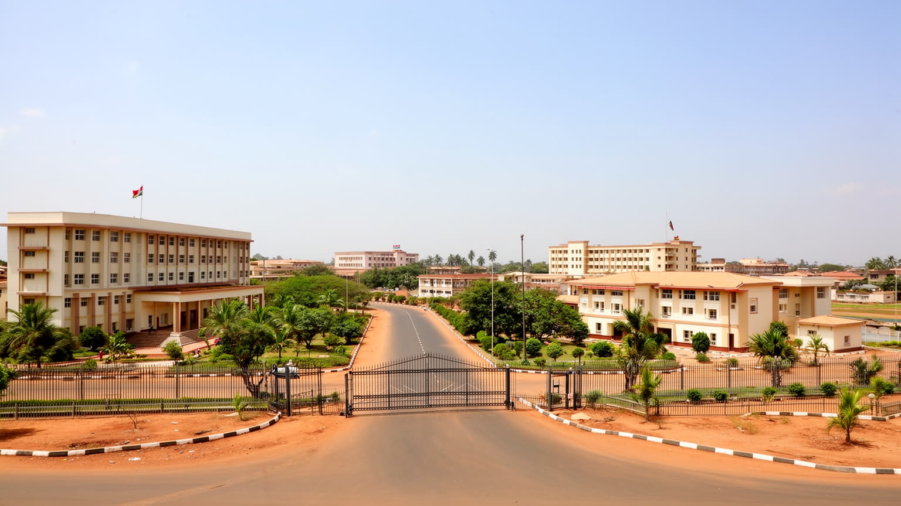
南スーダンが独立した二〇一一年以降、ジュバは新しい国家の制度を急いで受け止める場所になりました。大統領府、官庁、議会、裁判、軍、警察、外交団、国際機関、報道、大学、病院が首都へ集まり、地方から来る人びとは書類、仕事、医療、教育、政治的相談を求めてこの都市を目指すのです。ですが制度の集中は、安定した国家運営を意味するとは限りません。内戦、政治対立、財政危機、給与遅配、通貨下落、治安上の制約は、首都の行政機能を住民の生活費や移動不安へ直接変えます。役所の窓口、検問、会議場、ホテル、援助機関の車列、記者会見、抗議、夜間外出制限は、制度が街路に近いことを示します。ジュバでは政治は遠いニュースではなく、道路封鎖、燃料不足、学校の運営、病院の薬、家賃の上昇として経験されます。国家を建てるとは、国旗を掲げるだけでなく、住民が予測できる手続きと信頼できる公共サービスを得ることでもあります。首都に権限が集まりすぎると、地方との距離や不満も強まるのです。若者は官庁や援助機関での仕事を期待して首都へ来るが、雇用が限られれば不満はすぐ生活の不安になります。ジュバを読むには、若い国家の希望と、制度を日々動かす難しさを同時に見る必要があります。学校や病院の人材不足も首都で露出し、地方行政の弱さと結びつきます。首都の力は建物の大きさより、約束されたサービスが地区や州の違いを越えて届くかで測られるのです。制度が信頼されるかどうかは、住民が窓口で経験する待ち時間や公平さにも表れるのです。
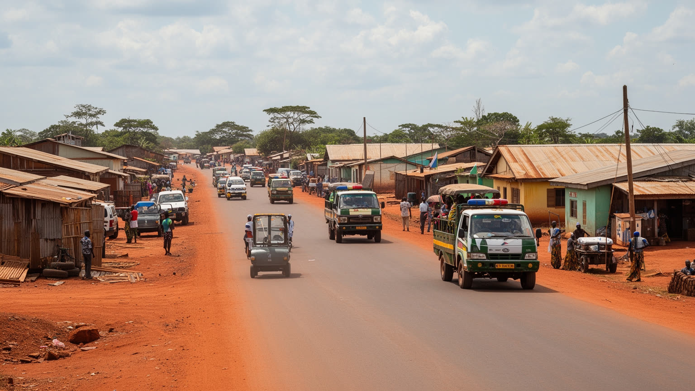
ジュバには国連機関、国際ＮＧＯ、大使館、開発機関、警備会社、物流業者、ホテル、会議施設が集まり、援助と外交の都市としての顔を持ちます。紛争、洪水、食料不安、避難、保健危機が続く南スーダンでは、援助は一時的な例外ではなく都市経済の大きな柱です。国際機関の事務所は雇用、賃貸、車両整備、通訳、清掃、警備、飲食、宿泊を生み、英語で働く若者や専門職に機会を与えるのです。一方で、援助経済は格差も可視化します。高い家賃の地区、発電機を備えた施設、白い車列、外貨建て契約は、露店や日雇いで暮らす人の生活とは大きく離れることがあります。援助が多いほど市場に現金が流れるが、物価や土地価格も押し上げるのです。住民は支援を必要としながら、支援が自立した公共制度へ変わらないもどかしさにも直面します。ジュバを国際都市として見るなら、空港や会議場だけでなく、支援の対象者、現地職員、避難民、運転手、清掃員、通訳がどのような条件で働き暮らしているかを見る必要があります。援助機関の調達は地元業者に機会を作る一方、外貨を持つ組織と持たない住民の差を広げることもあります。会議の言葉が地区の水道、学校、診療所へどう届くかを追うと、援助と生活の距離が見えます。援助は命を支えますが、都市の将来は援助を超えて、学校、医療、税、道路、雇用を自国の制度として積み直せるかにかかっています。国際都市としての成熟は、外部資金を住民の制度へ変換できるかにかかるのです。
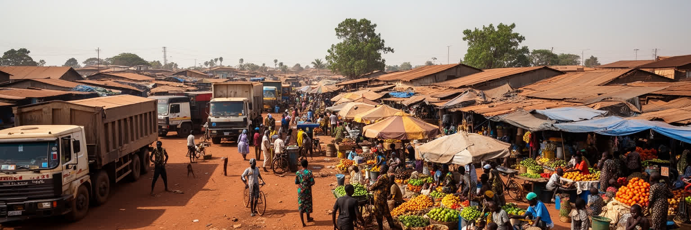
ジュバの市場は、南スーダンの首都機能と国境物流が交わる現場です。コニョコニョやグンボなどの市場には、ウガンダやケニア方面から届く野菜、穀物、油、砂糖、衣料、建材、携帯電話、燃料が集まり、市内の小さな売り場や家庭へ広がります。国内生産が不安定な時、道路と国境の状態は食卓を直接動かします。雨季の悪路、検問、燃料不足、通貨の下落、治安上のリスクは、荷の到着を遅らせ、値札を変え、家計を圧迫します。市場で働く人は、荷役、運転、露店、両替、調理、修理、清掃、警備など多様で、公式統計に出にくい仕事が都市の流通を支えています。女性の小商い、若者の手押し車、日雇いの積み下ろし、家族店の信用販売は、現金が不足する社会で重要な役割を持ちます。ジュバの経済を読むには、首都の官庁や援助機関だけでなく、袋を担ぐ人、価格交渉をする店主、長距離トラックを待つ家族の時間を見る必要があります。物価の上昇は抽象的な経済指標ではなく、食事の回数、学校へ持たせる弁当、発電機を回す時間に変わります。市場の近くには茶屋、修理屋、両替、携帯送金の小さな窓口があり、短い会話と信用が商売をつなぐのです。朝の仕入れが遅れれば一日の収入は変わり、雨や治安情報も商売の判断材料になります。市場は都市の不安定さを映すが、同時に住民の調整力と起業の場でもあります。価格の揺れを読む店主の判断こそ、首都の経済を一日単位で動かしています。
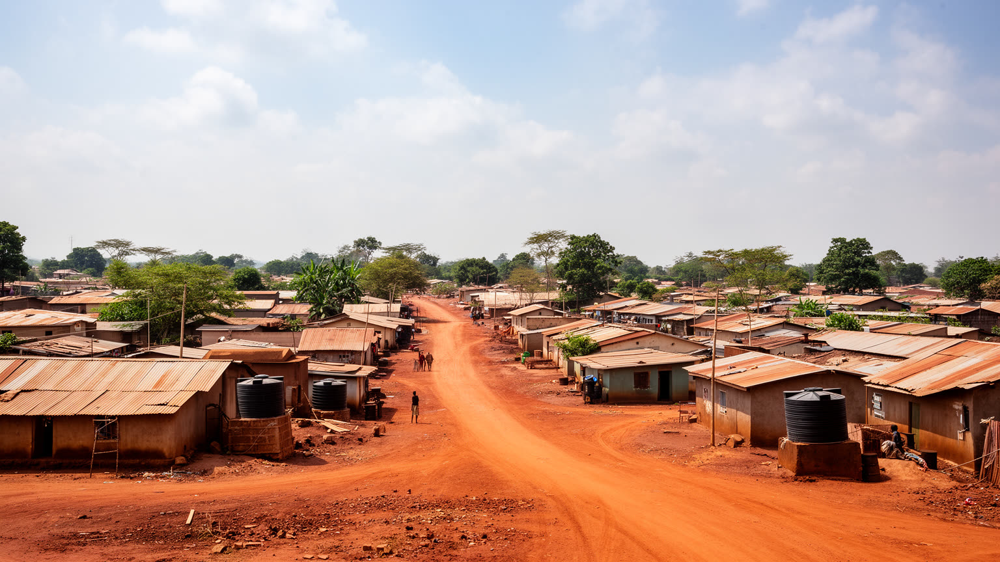
ジュバの急成長は、土地と住宅の問題を都市の中心に押し出しました。独立後の帰還、国内避難、援助機関の集中、民間投資、政府職員の移動が重なり、市街地は周辺へ広がったのです。ですが土地の権利は、慣習的な所有、行政の割り当て、投資家の取得、避難世帯の居住、地域コミュニティの記憶が複雑に絡みます。誰が正当に住む権利を持つのか、どこまでが村の土地でどこからが都市計画なのかをめぐり、争いが起きやすいです。住宅は低い塀のある家、賃貸住宅、未舗装道路沿いの小屋、旧保護民間人サイト周辺、郊外の新興地まで幅広いです。水、電気、排水、学校、診療所、市場、通勤路が近いかどうかで、生活の安全は大きく変わります。家賃が高くなるほど、低所得世帯は遠い場所やサービスの弱い場所へ押されます。ジュバの住宅問題は、単に家が足りないという話ではなく、帰還と避難、首都投資、土地の記憶、治安、公共サービスが絡む問題です。区画が変われば親族の近さや通学路も変わり、住民は法的な証明だけでなく地域の承認も求められます。水を買う距離や夜道の明るさは、家の価格以上に生活の安心を左右します。住まいが不安定な人ほど、学校や仕事、医療への接続も不安定になります。首都の発展を測るなら、新しい建物の数だけでなく、誰が安心して住み続けられるかを見なければなりません。住宅の安定は、和平後の信頼を家庭の内側から作り直す条件になります。
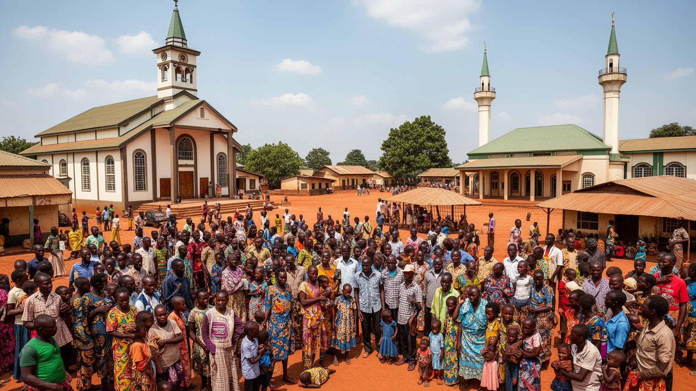
ジュバはバリをはじめとする周辺の土地に根を持つコミュニティと、南スーダン各地から移ってきた人びとが重なる多民族都市です。ディンカ、ヌエル、ムンダリ、パジュル、カクワ、ククなど、多様な背景を持つ住民が、仕事、避難、教育、政治、家族の事情で首都に集まります。言語は英語、ジュバ・アラビア語、各民族語が混ざり、街の会話そのものが国家の複雑さを映します。信仰生活では教会が目立つが、モスクや伝統的な儀礼も都市の時間を形づくります。日曜礼拝、聖歌、結婚式、葬儀、ラマダン、地域の集まりは、人が孤立しやすい首都で互いを支える仕組みになります。宗教施設は祈りの場所であると同時に、相談、教育、寄付、和解、避難の記憶を受け止める場所でもあります。ただし多民族性は常に調和だけを意味しません。土地、政治、治安、紛争の記憶が民族名と結びつく時、日常の信頼は壊れやすいです。ジュバの文化を読むには、踊りや音楽の多彩さだけでなく、違う背景の人が同じ市場、学校、教会、井戸、バス停を使う時の調整を見る必要があります。結婚式や葬儀は親族を広く集め、支出の負担もありますが、離れた人を結び直す大切な機会になります。音楽や礼拝の声は、紛争で断たれた関係を少しずつ結び直す場にもなります。祈りと親族関係は、困難な都市生活を支える力であり、同時に和解を試される場でもあります。共通の行事が増えるほど、首都は対立の記憶を生活の側からほぐしていけるのです。
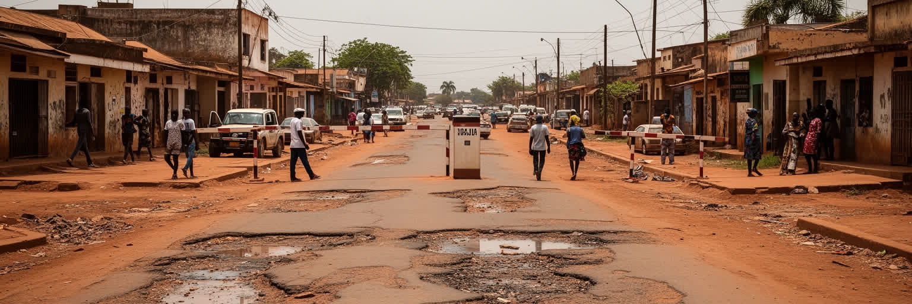
ジュバは独立の祝祭を経験した都市であると同時に、二〇一三年と二〇一六年の激しい政治暴力を記憶する都市でもあります。大統領警護隊の衝突から広がった戦闘、民族的な標的化、避難、旧国連保護民間人サイト、夜間の恐怖、家を失った人の記憶は、首都の社会関係に長く影を落としています。治安の問題は、ニュースで見る武力衝突だけではありません。夜にどの道を通るか、店をいつ閉めるか、子どもをどこへ通わせるか、家族をどの地区に住まわせるか、抗議や噂にどう反応するかという日常判断に現れます。近年も政治的緊張、土地問題、経済不満、周辺地域の武装勢力、犯罪への不安が、市内の警備や外出制限に影響することがあります。再建は、壊れた建物を直すことだけではなく、住民が互いを信頼し、行政や警察を頼れると感じることを含みます。ジュバの街路には、新しいホテルや店舗と、避難の記憶を抱えた家族が同時に存在します。治安を語る時、危険を消費するような視線ではなく、生活を続ける人の用心、疲労、回復を見る必要があります。商店がいつ再開し、夜に誰が迎えに来て、子どもがどの道を避けるのかにも記憶は残ります。被害を語れない沈黙も多く、都市の回復には時間と信頼が必要になります。平和は合意文書だけでなく、通学路、教会、市場、井戸、病院が普通に使える日々として確かめられるのです。安心して同じ道を歩ける日常こそ、首都の再建を測るいちばん身近な尺度です。
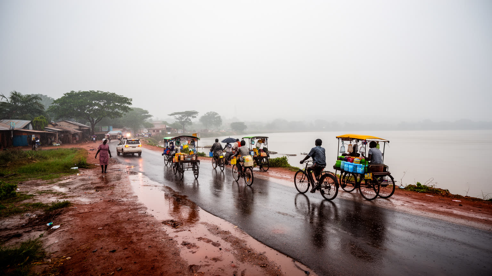
ジュバの気候は熱帯サバナ型で、暑さ、乾季、雨季の変化が生活を大きく左右します。乾季には砂埃と水不足が目立ち、雨季には未舗装道路が泥になり、排水の弱い地区で移動や商売が難しくなります。白ナイルに近い都市でありながら、安全な水へのアクセスは一様ではなく、給水車、井戸、貯水タンク、ボトル水に頼る家庭も多いです。水の価格が上がれば、洗濯、料理、衛生、学校、病院、飲食店の運営にすぐ影響が出ます。暑さは屋外で働く荷役、警備、露店、建設、バイク運転手に重く、電力が不安定な時は冷房や冷蔵も限られるのです。雨季の道路不良は、市場へ届く野菜や燃料の遅れを生み、物価の上昇にもつながります。気候は背景ではなく、都市の経済と健康を動かす力です。洪水や豪雨は周辺地域の避難を増やし、首都の援助機関や市場にも負担をかけるのです。ジュバの都市計画では、舗装、排水、日陰、公共水栓、廃棄物処理、保健サービスが防災と生活の質を同時に支えます。ごみが排水路を塞げば一度の雨で道は川になり、病気のリスクも増えます。水売りの価格、発電機の燃料、日陰の有無は、貧しい世帯ほど重く響くのです。気候変動を語るなら、国際会議の言葉だけでなく、雨の日に学校へ行ける道、水を買う家計、暑い市場で働く人の身体を見なければなりません。水と暑さの管理は、都市の衛生と労働を同時に支える基礎です。
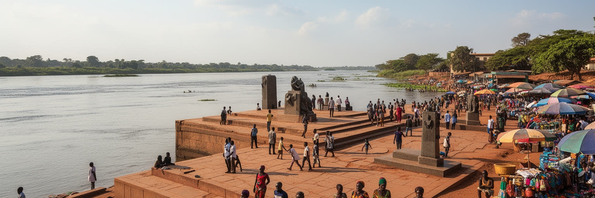
ジュバを訪れる動機は、古典的な観光都市とは少し違うのです。白ナイル河岸、ジョン・ガラン記念広場、市場、教会、丘からの眺め、国際機関の拠点、独立国家の首都という歴史的意味が、訪問者を引きつけるのです。ですが治安、移動許可、写真撮影、夜間行動、道路状況には常に注意が必要であり、観光は慎重さと現地情報なしには成り立たありません。見どころを消費するより、若い国家がどのように日常を組み立てているかを見る姿勢が重要です。市場を歩けば、輸入品、地元野菜、燃料価格、言語の混ざり方、女性の商い、若者の仕事探しが見えます。記念広場や官庁周辺では、独立の希望と紛争の痛みが重なります。河岸の夕方は穏やかに見えても、水、土地、避難、治安の課題はすぐ近くにあります。旅行者、援助関係者、研究者、報道関係者は、都市を背景として扱うのではなく、住民の生活空間に入っていることを意識しなければなりません。外から来た人の支出は店や運転手を助けるが、写真や語り方が住民の尊厳を傷つけることもあります。訪問前の安全確認、現地案内、撮影の同意は最低限の礼儀になります。ジュバの遺産は古い建築だけではなく、国家を作ろうとした人びとの記憶、避難を越えた家族、信仰、学校、市場の継続にあります。訪問の価値は、写真の量ではなく、複雑な現実を急いで単純化しない態度に表れるのです。旅の視線が慎重であるほど、首都の日常はより立体的に見えてきます。
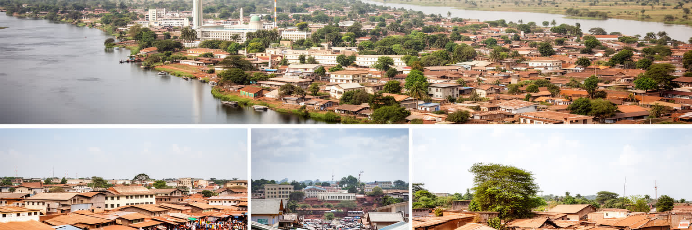
ジュバを世界の都市地図に置く時、人口や経済規模だけでは重要性を測れません。ここには、世界で最も若い独立国家の政治的中枢、白ナイルの物流、援助と外交、国境貿易、多民族社会、信仰、避難、土地争い、若者の教育、気候リスクが集まっています。都市はまだ整った首都というより、国家を作る途中の作業場です。舗装された道路と未舗装の道、国際機関の車列と露店、官庁と旧避難民居住地、教会の礼拝と市場の値段交渉が近い距離で並びます。統計が限られ、GDPも都市単位で把握しにくいからこそ、ジュバの力は市場、道路、学校、病院、井戸、家賃、検問、祈りの場所を重ねて読む必要があります。都市の脆さは明らかですが、そこには生活を続ける人の技術もあります。商人は仕入れ先を変え、家族は水を確保し、若者は技能を探し、宗教施設は支え合いを作り、行政は不完全ながら制度を動かそうとします。首都への集中が地方との不均衡を広げるなら、ジュバの発展は国全体の政治課題にもなります。人口の若さは可能性であると同時に、仕事と教育を用意できなければ不安定さにも変わります。ジュバの未来は、首都の外観を整えるだけでなく、住民が安全に住み、学び、働き、移動できる公共基盤を広げられるかで決まるのです。未完成であることは弱さであると同時に、都市がまだ別の形へ変われる余地でもあります。だからジュバは、完成した首都ではなく、国家と暮らしが毎日交渉される場所として読むべき都市です。